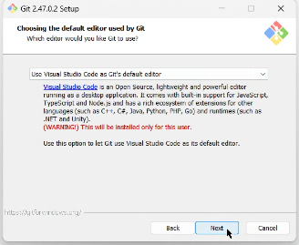
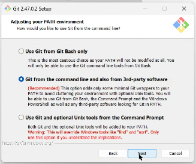

Prepara tu computadora para el curso — instalarás las tres herramientas de trabajo y crearás tus cuentas de Gmail y GitHub, paso a paso y sin experiencia previa.
Sigue las secciones en orden, de la A a la G. Cada instrucción indica si aplica a Windows (WIN) o a Mac (MAC); si no tiene etiqueta, aplica a ambos. Solo necesitas:
.zip: haz doble clic para descomprimirlo y arrastra la aplicación «Visual Studio Code» a la carpeta Aplicaciones. Ábrela; si macOS pregunta si confías en una app descargada de internet, pulsa Abrir.Verificación: VS Code se abre y muestra su pantalla de bienvenida. Puedes cerrarlo por ahora.
WIN En Windows, Git se instala con un asistente:
La primera: cuando pregunte por el editor por defecto, elige «Use Visual Studio Code as Git's default editor»:

La segunda: en la pantalla del PATH — la lista de carpetas donde el sistema busca los programas —, deja la opción recomendada «Git from the command line and also from 3rd-party software», que te permitirá usar git desde cualquier terminal:

MAC En Mac no hay instalador: se usa la Terminal una sola vez.
Terminal y presiona Enter.git --version y presiona Enter. Si Git no está instalado, macOS te ofrecerá instalar las herramientas de línea de comandos: acepta con Instalar y espera a que termine (varios minutos).Verificación (ambos sistemas): abre una terminal nueva — WIN pulsa la tecla Windows, escribe PowerShell y presiona Enter · MAC la misma Terminal de antes — y ejecuta:
git --version
git --version git version 2.47.0
Verificación: abre una terminal nueva (o la de VS Code: Terminal → New Terminal) y ejecuta solo el comando de tu sistema:
WIN En Windows:
python --version
MAC En Mac (con el 3 al final):
python3 --version
python --version Python 3.14.6
.pkg): úsalo con confianza.Python, elige la extensión Python de Microsoft (la primera, con millones de descargas) y pulsa Install.Jupyter, elige la extensión Jupyter de Microsoft y pulsa Install. Es la que permite abrir notebooks: los cuadernos interactivos que combinan texto y código, donde trabajaremos en las clases.Verificación: en el panel de Extensiones, la pestaña Installed muestra Python y Jupyter (con algunas extensiones compañeras que se instalan solas, como Pylance — es normal).
Esta cuenta es la que usarás para Google Colab — la herramienta en la nube con la que también se sigue el curso — y para registrarte en GitHub en la siguiente sección.
nombre-apellido — será público y te acompañará toda la maestría.Verificación: revisa tu correo y confirma que aparece como verificado en GitHub (si no llegó el código, revisa la carpeta de spam). Al pulsar tu avatar (arriba a la derecha) → Your profile, ves tu página pública: ahí vivirá tu portafolio.
Git firma cada cambio que guardes con un nombre y un correo. Configúralos una sola vez, en cualquier terminal (la de VS Code sirve). Al pegar los comandos, sustituye Nombre Apellido por tu nombre real y tu-correo@ejemplo.com por el mismo correo de tu cuenta de GitHub, conservando las comillas:
git config --global user.name "Nombre Apellido" git config --global user.email "tu-correo@ejemplo.com"
Verificación: este comando debe mostrar las dos líneas con tus datos:
git config --global --list
git config --global --list user.name=María Torres user.email=maria.torres@gmail.com
Marca cada punto solo si lo comprobaste en tu computadora:
python y se abre la Microsoft StoreWindows trae un acceso directo falso a Python que abre la tienda. Pasa cuando Python no está instalado o se instaló sin marcar la casilla Add python.exe to PATH. Vuelve a ejecutar el instalador de la sección C y fíjate en qué pantalla aparece:
Al terminar, abre una terminal nueva y repite python --version.
Las terminales abiertas antes de instalar no se enteran de los programas nuevos: cierra todas las terminales (y VS Code completo) y vuelve a abrir. Si python sigue sin responder en Windows, revisa P1.
python --version dice “command not found” o muestra 2.7En Mac el comando del Python moderno es python3 (con el 3). Usa siempre python3 --version. Si también falla, repite la sección C y verifica en una terminal nueva.
No pasa nada: desinstálalo (WIN Configuración → Aplicaciones → Aplicaciones instaladas → Python install manager → Desinstalar) y usa el enlace directo de la sección C para instalar el Python clásico, marcando la casilla del PATH.
Es una protección de PowerShell que aparecerá al activar entornos virtuales (clase 2). Ejecuta en la terminal:
Set-ExecutionPolicy -ExecutionPolicy RemoteSigned -Scope CurrentUser
Responde S (o Y) si pregunta, cierra esa terminal y abre una nueva.
Es Gatekeeper, la protección de macOS. Cierra el aviso y ve a Ajustes del Sistema → Privacidad y seguridad; baja hasta el mensaje sobre la app bloqueada y pulsa Abrir de todos modos (te pedirá tu contraseña). Solo hace falta la primera vez. En macOS 14 o anterior también sirve el atajo: clic derecho (o Ctrl + clic) sobre la aplicación → Abrir → Abrir.
Revisa la carpeta de spam / correo no deseado y espera un par de minutos. Puedes pedir un código nuevo desde la misma página. Si usaste un correo institucional y no llega, prueba con tu Gmail.
Con las tres herramientas instaladas y tus cuentas listas, tu computadora ya es un laboratorio. El siguiente paso es de la clase 2: clonar el repositorio del curso y crear tu primer entorno virtual — todo está en el Manual de la clase 2 — GitHub y tu primer entorno.